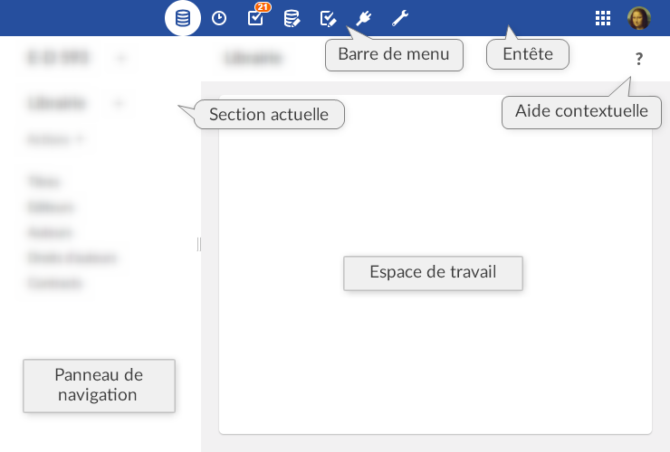
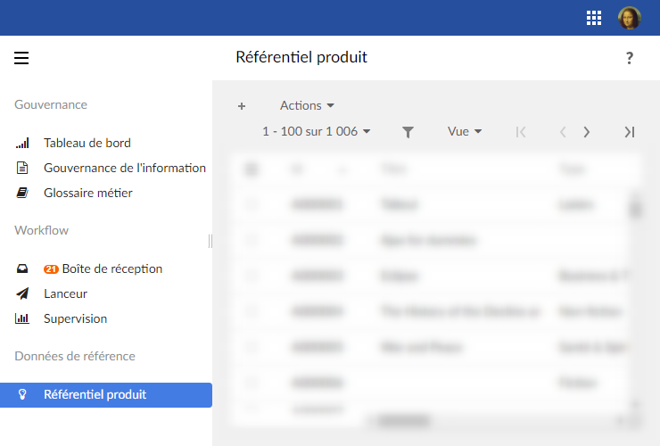
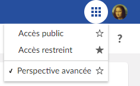
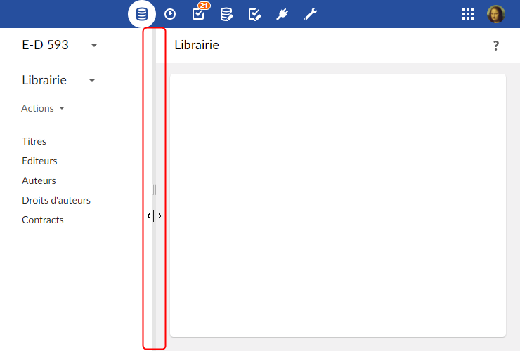
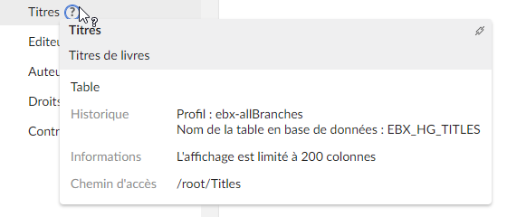
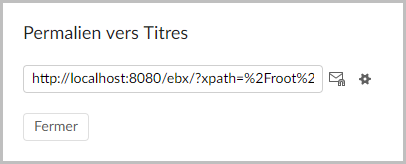

Interface utilisateur
Présentation
La présentation générale des espaces de travail sur TIBCO EBX® peut être entièrement personnalisée par un administrateur.
Lorsque plusieurs perspectives personnalisées ont été créées, elles peuvent être sélectionnées via l'icône 'Perspective' dans l'en-tête de l'écran.
La perspective avancée est accessible par défaut.
Perspective avancée
Par défaut, la perspective avancée d'EBX® est accessible à tous les utilisateurs. Cependant, son accès peut être restreint à certains profils uniquement. Cette vue est divisée en plusieurs zones principales, référencées dans la documentation sous les termes suivants:
En-tête : l'avatar de l'utilisateur actuel s'affiche dans cette zone, ainsi que l'icône de sélection des perspectives. En cliquant sur l'avatar de l'utilisateur, le panneau utilisateur s'ouvre.
Barre de menu : cette zone comprend toutes les fonctionnalités accessibles à l'utilisateur actuel et lui permet de naviguer entre elles.
Panneau de navigation : cette zone résume visuellement les diverses possibilités de navigation. Par exemple : sélectionner une table dans un jeu de données, ou un bon de travail dans un workflow.
Espace de travail : zone de travail principale dépendant du contexte. Par exemple, la table sélectionnée dans le panneau de navigation s'affiche dans l'espace de travail, ou bien un bon de travail en cours s'y exécute.
Les sections fonctionnelles suivantes sont affichées dans l'interface selon les permissions de l'utilisateur actuel : Données, Espace de données, Modélisation, Workflow de données, Services de données, et Administration.

Perspectives
Les perspectives dans EBX® sont des vues configurables avec une audience définie. Les perspectives permettent aux utilisateurs métier de bénéficier d'une interface simplifiée. Une perspective peut être affectée à un ou plusieurs profils. Cette vue est divisée en plusieurs zones principales, référencées dans la documentation sous les termes suivants :
En-tête : l'avatar de l'utilisateur actuel s'affiche dans cette zone, ainsi que l'icône de sélection des perspectives (lorsque plusieurs sont disponibles). En cliquant sur l'avatar de l'utilisateur, le panneau utilisateur s'ouvre.
Panneau de navigation : cette zone affiche le menu hiérarchique tel qu'il a été configuré par l'administrateur de perspectives. Ce panneau peut être développé ou réduit et permet d'accéder aux entités et services correspondant à l'activité de l'utilisateur.
Espace de travail : zone de travail principale dépendant du contexte.
Exemple de menu hiérarchique :

Perspectives favorites
Un utilisateur, lorsque plusieurs perspectives ont été définies pour son profil, peut définir une perspective favorite afin que cette dernière soit sélectionnée par défaut à sa connexion. Pour ce faire, une icône est présente à côté de chaque perspective dans le sélecteur de perspectives :
Une étoile pleine indique la perspective favorite. Un clic sur cette icône désélectionne la perspective favorite.
Une étoile vide indique que la perspective associée n'est pas la favorite. Un clic sur cette icône va définir cette perspective comme favorite.

Panneau utilisateur
Les fonctionnalités générales d'EBX® sont regroupées dans le panneau utilisateur. Pour y accéder, cliquer sur l'avatar (ou les initiales) de l'utilisateur actuel, dans l'en-tête de chaque page.
Le panneau utilisateur affiche alors l'avatar de l'utilisateur et donne accès à la configuration du profil (selon les droits de l'utilisateur), à la sélection de la langue et de la densité d'affichage ; et à la documentation en ligne.
Attention
Le bouton de déconnexion est situé sur le panneau utilisateur.
Avatar
Un avatar peut être défini pour chaque utilisateur. L'avatar est constitué d'une image, définie via une URL ; ou de deux lettres (par défaut les initiales de l'utilisateur). La couleur de fond est attribuée automatiquement et ne peut pas être modifiée. L'image utilisée doit impérativement être au format carré mais n'est pas limitée en termes de taille.
L'affichage de l'avatar peut être personnalisé à partir de la section 'Ergonomie et disposition' dans 'Administration'. Il est possible d'afficher l'avatar, le nom de l'utilisateur, ou les deux à la fois.
Densité
La densité d'affichage de la police peut être personnalisée : 'Compacte' ou 'Confortable'. Le mode d'affichage peut être modifié via le panneau utilisateur.
Fonctionnalités de l'interface utilisateur
Réinitialiser la largeur du panneau de navigation
Si la largeur du panneau de navigation a été modifiée, elle peut être réinitialisée en double-cliquant sur la bordure.

Où trouver de l'aide sur EBX®
En plus de la documentation complète du produit accessible via le panneau utilisateur, l'aide est accessible de plusieurs façons dans l'interface.
Aide contextuelle
Dans n'importe quel espace de travail d'EBX®, une aide spécifique au contexte actuel est disponible en cliquant sur le point d'interrogation situé à droite du second bandeau. Le chapitre correspondant de la documentation produit sera alors affiché.
Aide contextuelle sur éléments
Lorsque la souris survole un élément pour lequel une aide spécifique a été définie, un point d'interrogation apparaît. En cliquant sur le point d'interrogation, un panneau de documentation affiche les informations associées.

Un bouton dans le coin supérieur droit du panneau permet de récupérer un permalien vers l'élément. Ce bouton n'est pas disponible pour tous les types d'éléments.

 Sommaire du guide utilisateur
Sommaire du guide utilisateur